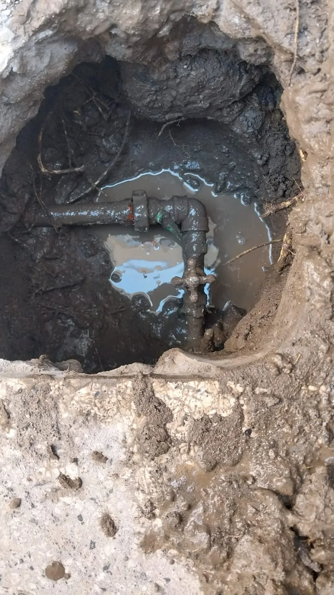
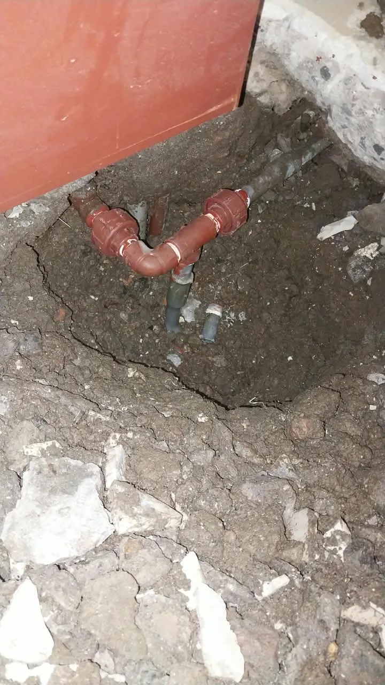
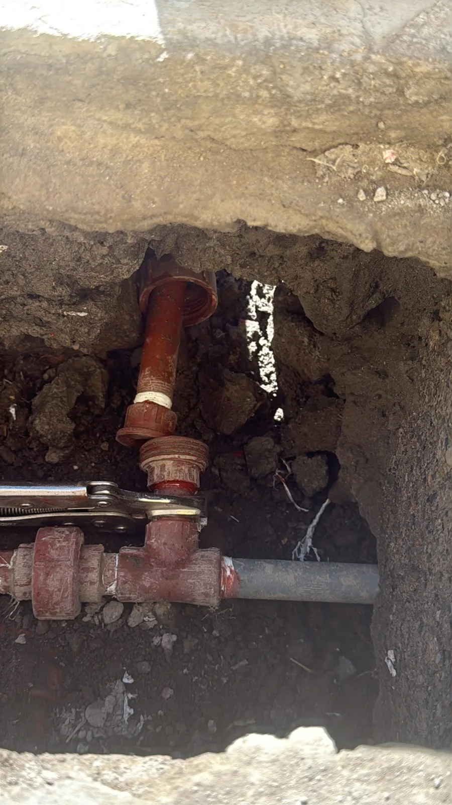

REVISA EL ORIGEN DE LA PÉRDIDA
Detección de fugas de agua en Arequipa
Revisión de pérdidas de agua y reparación de tuberías. Si notas humedad o agua acumulada, envíanos fotos para coordinar una evaluación.
Cotizar por WhatsApp
EL SERVICIO
En qué podemos ayudarte
Localización del punto de pérdida
Reparación de conexiones y tramos afectados
GALERÍA
Conoce más del servicio
Imágenes compartidas por Euro Total. Abre cada foto para verla completa.



ANTES DE COORDINAR
Preguntas frecuentes
¿Se necesita abrir el piso o la pared?
Depende de dónde se encuentre la tubería y de su acceso. El alcance de la intervención se define después de revisar el caso.
¿Qué señales debo comunicar?
Humedad, pérdida de presión, agua acumulada o consumo inusual. Explica cuándo empezó y dónde lo observas.
CONVERSEMOS SOBRE TU PROYECTO
Cuéntanos qué necesitas.
Envíanos fotos, medidas y tu distrito. Te ayudamos a definir el siguiente paso.
904 631 279